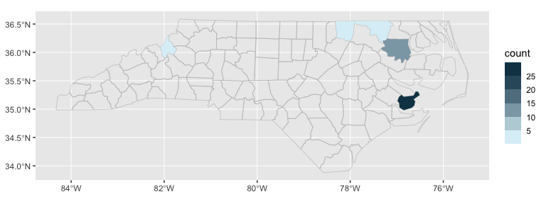
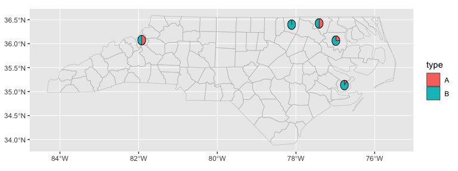

ggautomap makes it easy to visualise your data on a map when you have a column in the data that names a place/region. Other packages can register map data, such as nswgeo.
Installation
You can install ggautomap like so:
options(repos = c(
cidmph = 'https://cidm-ph.r-universe.dev',
CRAN = 'https://cloud.r-project.org'))
install.packages('ggautomap')Registering map data
ggautomap provides the tools for visualising maps, but you need to get the map data itself from somewhere. You can either register it with register_map(), or use one of these packages that register their own map data:
-
{nswgeo}- map data of New South Wales, Australia. Also includes more detailed examples of using ggautomap.
Example
ggautomap comes with one example dataset registered. You can register additional map datasets or depend on another package that registers them for you.
library(ggplot2)
library(ggautomap)
feature_types()
#> [1] "sf.nc"
head(feature_names("sf.nc"))
#> [1] "Ashe" "Alleghany" "Surry" "Currituck" "Northampton"
#> [6] "Hertford"All you need is a column in your dataset that matches the feature_names() of the map data. For the "sf.nc" map data, this dataset is suitable:
head(nc_type_example)
#> location type
#> 1 Bertie A
#> 2 Bertie A
#> 3 Bertie B
#> 4 Pamlico B
#> 5 Warren B
#> 6 Pamlico BYou can then use this data with the geoms to provide map summaries. For the map outline, you’ll need to specify feature_type, but the other geoms will usually be able to guess the correct value.
ggplot(nc_type_example, aes(location = location)) +
geom_boundaries(feature_type = "sf.nc") +
geom_geoscatter(aes(colour = type), size = 0.5)
ggplot(nc_type_example, aes(location = location)) +
geom_boundaries(feature_type = "sf.nc") +
geom_centroids(aes(colour = type, scale = 6), size = 0.5)
ggplot(nc_type_example, aes(location = location)) +
geom_boundaries(feature_type = "sf.nc") +
geom_choropleth() +
scale_fill_steps(low = "#e6f9ff", high = "#00394d", na.value = "white")
ggplot(nc_type_example, aes(location = location)) +
geom_boundaries(feature_type = "sf.nc") +
geom_pie(aes(fill = type), pie_radius = 0.1)